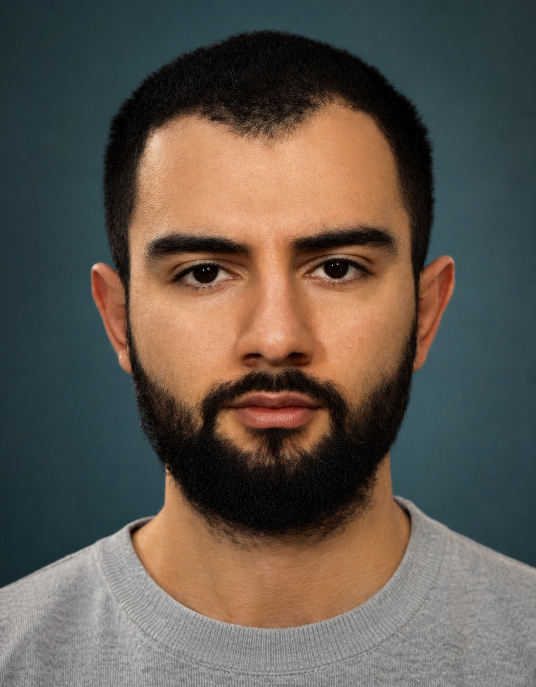

Mark Hamazaspyan
Researcher & Machine Learning Team Lead
I work on Physical AI: building models that understand how the world changes, recognize when robotic tasks go wrong, and support reliable real-world interaction.
At Metric, my current research focuses on world models, JEPA architectures, self-supervised video learning, and failure detection for robotic tasks. I also teach data management and data analytics and visualization in Yerevan.

Research
-
Robot task failure detection
I work on detecting when robotic policies fail, understanding why they fail, and recognizing problems early enough for recovery or intervention. This includes evaluation across varied tasks, environments, and failure modes.
-
World models & JEPA architectures
I study predictive representations of video and action: models that learn how scenes evolve, capture task-relevant dynamics, and provide useful state representations for embodied agents.
-
Vision-language-action learning
I investigate multimodal models for robotic manipulation, including temporal reasoning, action representation, robot adaptation, imitation learning, and offline evaluation.
Current & selected work
-
Failure detection for robotic tasks
Developing methods and evaluation pipelines for recognizing unsuccessful robot behavior from video and learned representations, with a focus on robust detection across tasks and failure types.
-
Predictive video representations
Research on self-supervised video learning, temporal prediction, and JEPA-style architectures as foundations for world models and more reliable embodied systems.
-
Diffusion-Enhanced PatchMatch
A method for arbitrary style transfer that combines diffusion models with PatchMatch, without fine-tuning or pretraining for each style.
-
Multilingual visual document retrieval
Developed vision-language retrievers for visually rich documents, with an emphasis on multilingual retrieval quality and efficient inference.
Teaching & background
I teach data management at the American University of Armenia and Data Analytics and Visualization at Yerevan State University. Earlier, I co-founded Breedge, an education technology startup, and worked on AutoML and NLP systems.
- Yerevan State University · MS in Applied Statistics and Data Science, 2023
- American University of Armenia · BA in Business: Economics, 2019